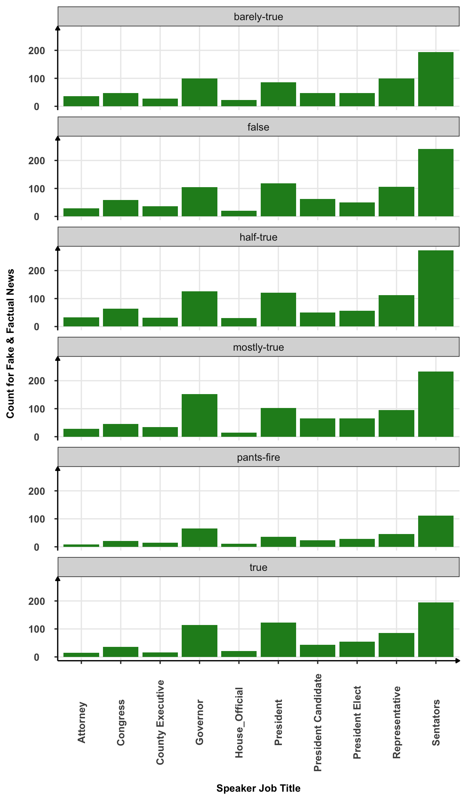
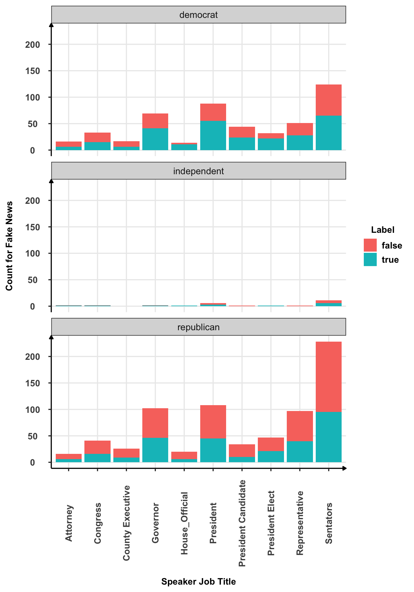
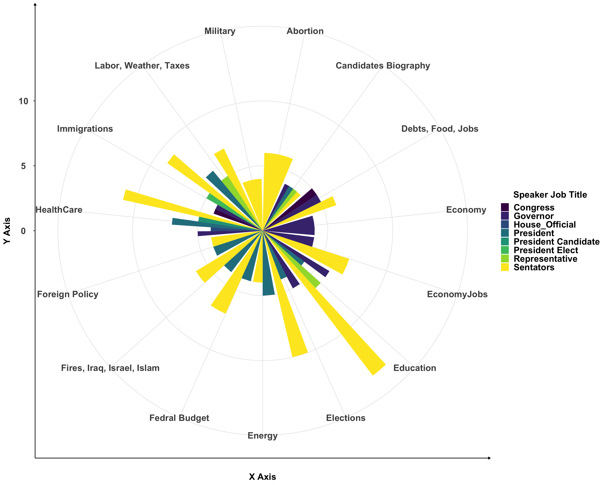
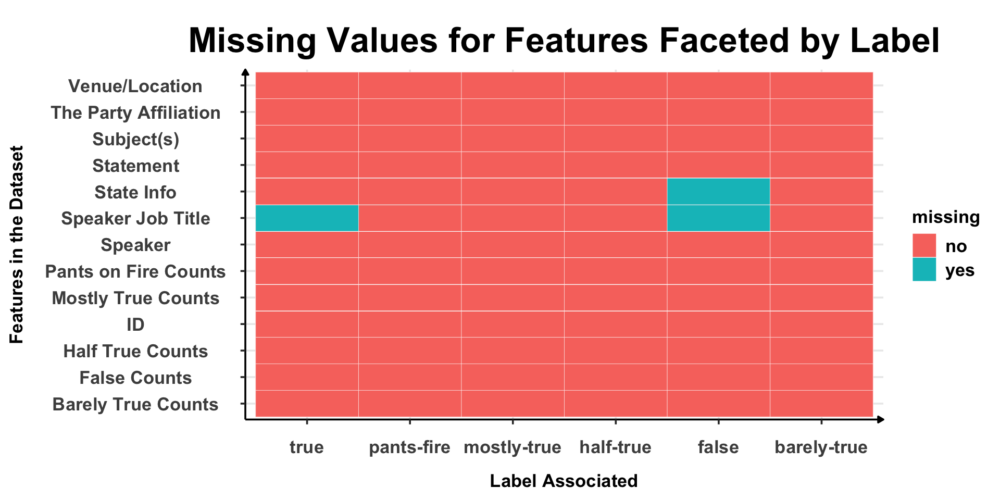
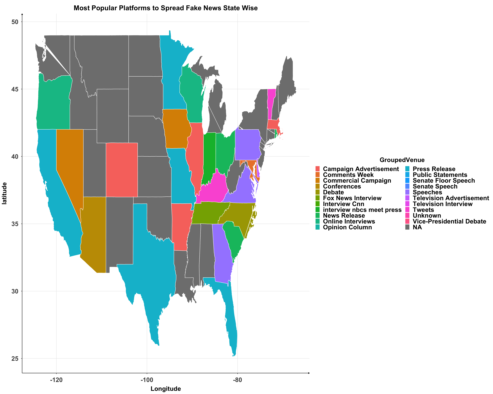
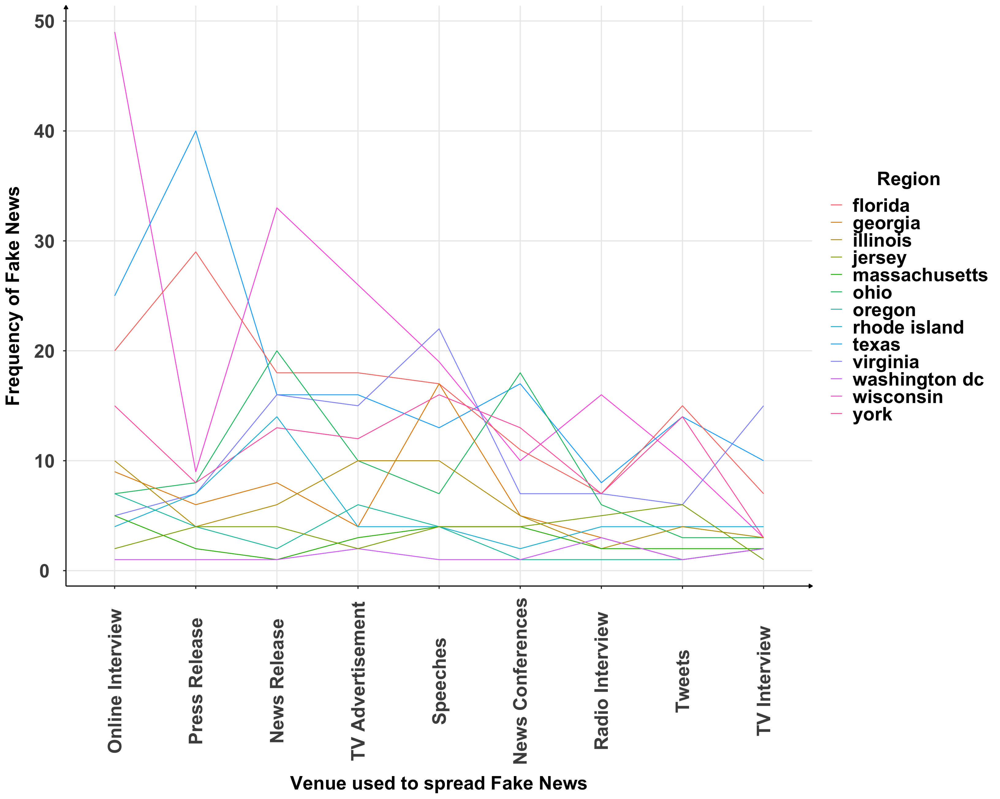
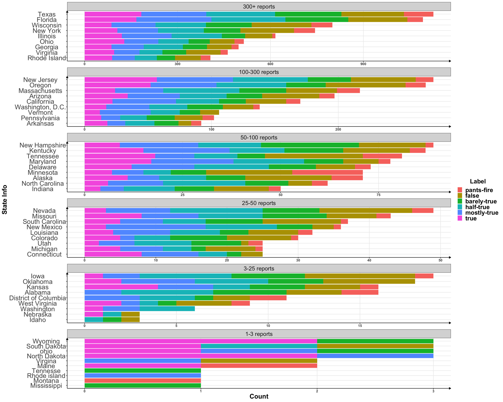
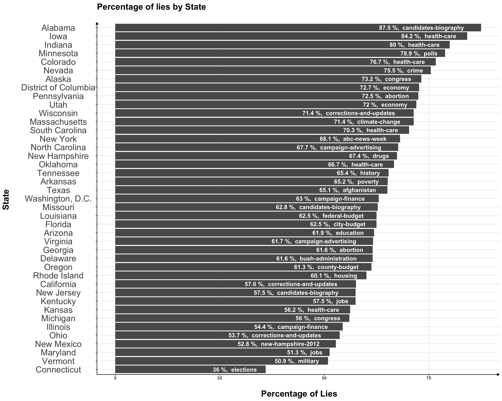
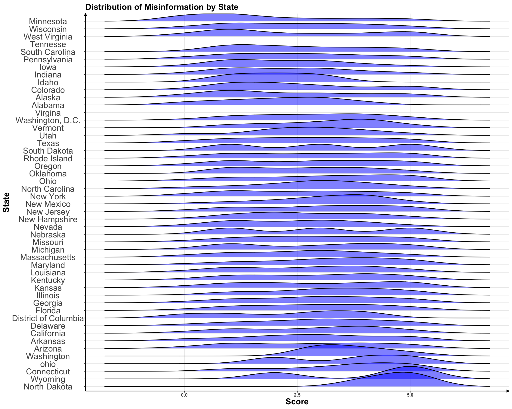
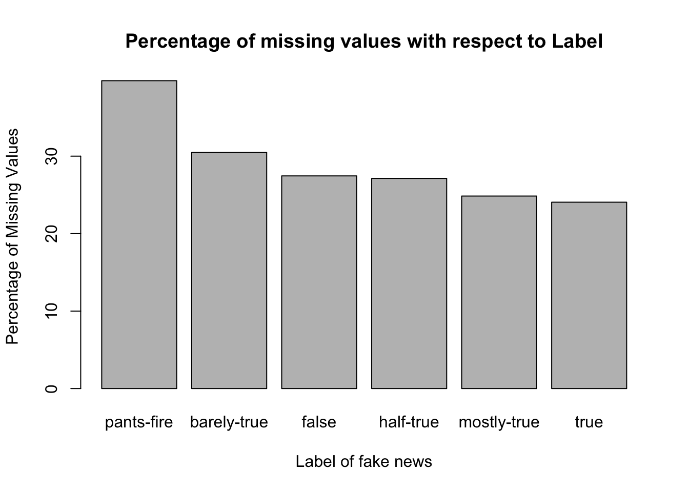

Chapter 5 Results
Question 1 : Which positions of authority lead to Fake & Factual information? Which Party tends to spread Fake News More?

Observation from Graph 1
President, Governor and Senators spread the most news in all categories of truthfulness.
The “President Elect” & “President Candidate” had very similar news counts throughout the truthfulness spectrum
Senators from the Party lead the count for spreading information, for both Factual & Fake. The graph also demonstrates highest pants-fire count for Senators, demonstrating that they spread the most ridiculous claims out of all job titles in the graph.
For all job titles, the counts for mostly-true news were higher than true news.
House Officials have had the least counts in spreading Fake or Factual News.
The total count for pants-fire, false, barely-true, and half-true news is higher than the total count for mostly-true and true news, signifying that almost all job titles in the graph are associated with a high proportion of Fake News.

Observation from Graph 2
- Republican Party is has a higher proportion of Fake News.
- The proportion of half-true is more than false for almost all Speakers belonging to any party. This tells us that significane of some truth in any given statement is high.
Question 2: What are the most selected topic/Subject picked by each Speaker which has the highest tendency of Spreading Fake News"

Observation from Graph
Senators have spread Fake News in highest propotion with respect to every topic demonstrated in graph
President Candidate had Fake News only related to Immigration
President didn’t had Fake News related to topics like Military, Abortion, Debts, Jobs, Economy,
Only Senators and President had fake news related to topics :- Fires, Iraq, Israel, Islam, Foreign Policy, Fedral Budge, Energy.
Education Subject had the highest count for fake news and the most selected topic by any speaker.
The Propotion of Half-True is more than False for almost all Speakers belonging to any party. This tells us that significane of some truth in any given statement is high.
Question 3:- States Spreading maximum number of false counts, noting the count of different speakers involved in spreading Fake News

Observation from the Graphs
Above Graph gives a clear idea for the count of Fake News in each State. The larger the rectangle, the state had more number of Fake News Spread. The color is mapped with the different number of speakers involved in that state to spread Fake News.
There were lot of states in the dataset which were labelled Unknown while pre-processing, which apparently are also spreading Fake News in high propotions
Texas is most widely known state to spread Fake News with about 400+ different Speakers involved in spreading Fake News
Count of Fake News Spread is closely related with the different number of Speakers spreading the news. North Carolina, Tennessee, Colorado, Alaska etc, which share the same size, have least number of different speakers observed.
New York, Wisconsin and Florida have almost equal number of counts in spreading Fake News, which are compartively high when compare to other states. Also, Wisconsin and New York share the same count for number of speakers but the Florida has most number of different speakers among the 3, spreading the Fake News.
Question 4 :- The Most Prone Fake News Method of communication, State Wise

Observation from Graph
Below are the few names of venues (platforms) state wise which were used maximum times to spread fake news
Florida, Texas, California, Indiana, Maryland, Missouri, North Carolina mostly uses Press Release as the mediumn for fake news.
Georgia, Illinois, Pennsylvania, Virginia mostly uses Speeches as the medium for fake news.
Since the states map imported from library had more states than the states present in our dataframe, we obderved NA in the graph. We didn’t had the information related to “most widely platforms used” to spreak fake news.
Our Grouping of Venue Like Tweets/Tweet to Tweet might not be that accurate as we have used group_str to do the concatenation with the distance of similarity as 3 between words. This parameter can be manipualated for better efficiency.
Question 5:- Correlation, Clusters & Outliers observed for different Mediums/Platforms in spreading Fake News for each State

Observation from the Graphs
The count for OnlineInterview Medium for spreading Fake News was mostly less (<10) for most of the regions, except Wisconsin, Texas and Florida.
Most of the States, who have used Press Release for spreading Fake News, have also used News Release. We observed Positive Correlation between these two mediums for almost all the regions
Similarly, we noticed negative correlation between News Release and TV Advertisement. Those states which have used News Release have a reduce count for the TV Advertisement
We noticed wide range of differences in count between New York & Jersey for each above mentioned platform in graohw which suggest different political administration.
Even Twitter, the most popular online social platform waas not used as the medium to spread Fake News for these states.
Question 6: Count of Words in Statment and its relationship with Label for the News

Observation from the Graphs
For Statements between 100 and 1000 Words,
The propotion for the True Labels are high with the word counts less than 300 in the statements made by any speaker
All Speakers had False Count in more propotion over True Count.
Question 7 : What are the proportions of fake news for each state?

Observation from the Graphs
All states generally report a variety of news ranging throughout the entire truth spectrum (from true to false).
The majority of news reports have some level of truth in them, with the exception of Maine and Minnesota.
All states follow roughly the same distribution of fake news (of course, with the exception of states with very few reports).
Texas reported the most news while Tennessee, Montana, Rhode Island, and Mississippi have the fewest news reports out of all states.
Out of all states with over 100 reports, Vermont was the only state that did not make any pants-on-fire reports (in other words, Vermont was the only state with over 100 reports that did not make any ridiculous claims).
Question 8 : What are the states with maximum proportions of fake news and in what subject?

Observation from the Graphs Note: news reports that are labelled with pants-on-fire, false, barely-true, or half-true are considered not factual. Factual news are either mostly-true or true.
Alabama is the most misinformative state and Conneticut is the most informative.
Healthcare is the most misinformative subject out of all subjects in the states, with candidates-biography being the second most misinformative subject.
The top 5 most misinformative states are either Southern or Midwestern, while the bottom 3 most misinformative states are located in the Eastern region of the United States
Apart from the top 5 and bottom 3 states, there does not seem to be a particular region associated with misinformation spread by state
Question 9 : Distribution of Factual News with respect to state
 Observation from the Graphs Note: Each label was assigned a score, from 0 for pants-fire to 5 for true
Most states either have a very flat or bimodal distribution. This is consistent with the graph in question 7, where most states have news reports that range throughout the entire truth spectrum.
The top 2 most honest states by median (Wyoming and North Dakota in this case) have most of their distribution around the score of 5.
North Dakota is consistently true with their news, while Washington is consistently half-true with their news
Question 10 : Which subject has the most concentrated fake news?
 Observation from the Graphs
Note: a news report is considered fake news if it is either pants-on-fire, false, barely-true, or half-true
Observation from the Graphs
Note: a news report is considered fake news if it is either pants-on-fire, false, barely-true, or half-true
Religion has the most misinformation spread about it
Most of the controversial subjects present in question 8 are also present in this graph (and are therefor the top 50 most misinformative subjects)
Like one would expect, most of the subjects present in this graph are related to social issues or political topics.
**Question 11 : *Origin of Fake Vs Factual News with respect to Venue, Party & Job Title**
 Observation from the Graphs
Fake news is present no matter what venue, party, or type of speaker it originates from
For every type of venue, party, and job title, at least half of the news reports are not entirely true
As seen in the Label column, most news reports in this entire graph are not entirely true